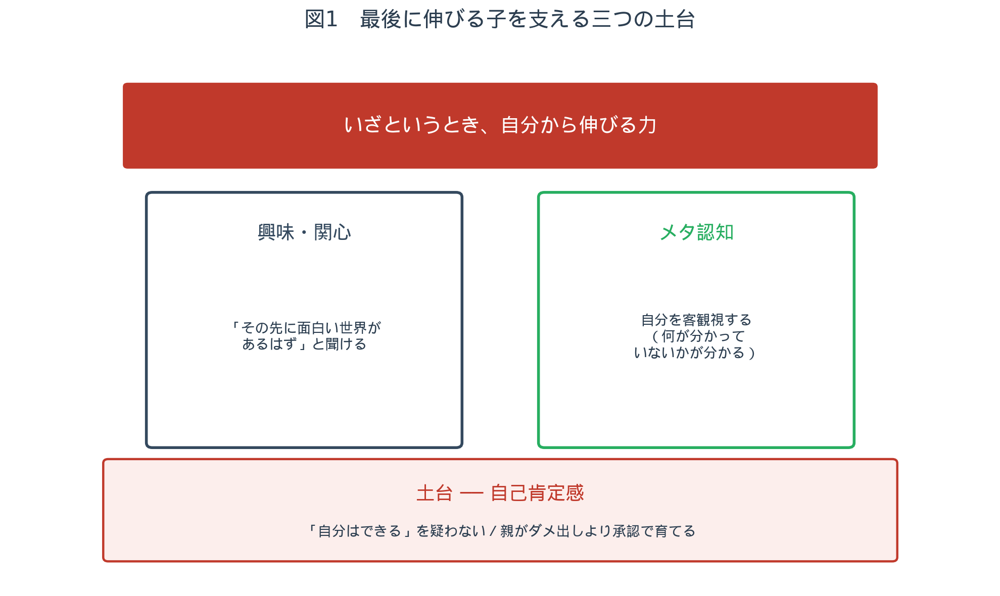
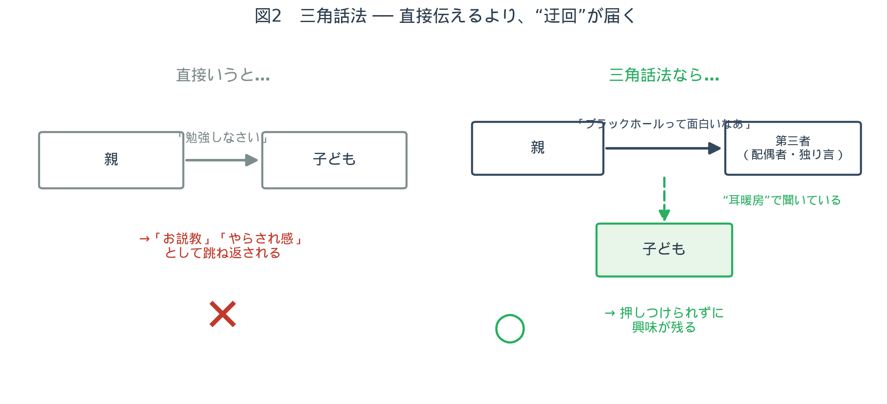
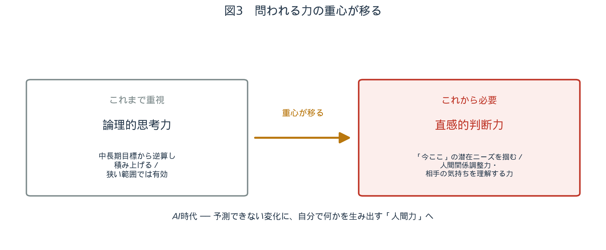

第一部 ── この対話について
4年、102回
番組の冒頭、鈴木先生がしみじみと切り出します。
鈴木今日は管野先生、ちょっと振り返ってみたら、なんと102回目なんですよね、この番組。4年ぐらい前から撮り続けてきて、102本。最初のころの映像は、いろんな意味で怖くて見られない（笑）。若いなあ、とか、まだこなれてなくて硬いなあ、とか。
4年間、同じテーマを表題を変えながら、手を替え品を替え語り続けてきた。その最終回にあたって、二人は「これまで特に強調してきたトピックを三つ」に絞ることにします。
鈴木三つ、いきましょう。一つ目が、今まで指導してきた中で言える「伸びる生徒・伸びない生徒の特徴」。二つ目が「親としてのあり方」。これが、この番組のメインでもありますね。三つ目が「これからの時代に必要な力とは何か」。この三本を、それぞれ話していきたいと思います。
以下、その三つのテーマを順に追っていきます。
第二部 ── 二人の対話
§1 ── 伸びる生徒・伸びない生徒
「人が変わる」生徒
まず一つ目のテーマ。長年の指導のなかで、どんな生徒が「伸びた」のか。ここでは話を、高校受験でうまくいった生徒に限定して振り返ります1。
管野先生には、4000人近い卒業生を送り出してきた経験があります。その口から出たのは、意外な観察でした。
管野「伸びる生徒」って、わかるようでわからないんですよ。普段の授業態度がいいとか、家庭学習をコツコツやるとか、そういう生徒が伸びると一般には思われがちですけれど。でも、私が印象に残っているのは、むしろ逆で ── 「あんまり勉強しないな」と、親も塾の先生も文句を言っているような生徒が、入試が近づいてくると人が変わって、猛烈に勉強し始める。その変身ぶりが、ものすごく印象に残るんですね。
鈴木あれだけ宿題もやってこなくて叱られていた生徒が、ある日を境に別人になる。「人間ってここまで変わるのか」と、こっちが刺激を受けるくらいで。講師冥利に尽きる瞬間でもありますよね。
では、その「人が変わる」生徒には、何か共通点があるのでしょうか。
共通点①：自分を疑っていない（自己肯定感）
管野あります。共通点があって ── 自分に対する疑いがないんですね。「自分はダメな生徒だ」「所詮、俺はできないんだ」という、そういうネガティブな気持ちを持っていない生徒が多い。親御さんが、割と自己肯定感2を高めに育てたのかな、という印象があります。
ここで鈴木先生が、キーワードを拾い上げます。
鈴木自己肯定感、ですね。
管野そうです。だから、子どもに対してダメ出しをあまりしていない。甘やかす、という意味ではないんです。子どものいいところをちゃんと認めてあげている ── その子の承認欲求をうまく満たしている。そういうお子さんは、普段の勉強態度がよろしくなくても、最後に頑張れるのかなと思いますね。自分に対する信頼感、と言い換えてもいい。それを持っている生徒は、強いです。
「甘やかし」と「承認」は違う。子どものいいところを見て、認める。その積み重ねが、いざというときに「自分ならできる」と踏み込める土台になる ── これが一つ目の共通点です。
共通点②：何にでも興味を持って聞ける
続いて、鈴木先生から。
鈴木私の方から挙げるとすれば、どんなことでも興味を持って話を聞いてくれる子。今は一見つまらなさそうな話でも、「その先に何か面白い世界があるんじゃないか」という姿勢で聞いてくれる子は、強い。たとえその子が、仮に数学が苦手だったとしても、いずれ絶対にできるようになる。今まで振り返ると、そうだったんです。
その「興味の入口」をどう開くか。鈴木先生の授業には、一つの型があります。
鈴木クセジュの数学の授業では、よく歴史の話をするんですよ。たとえばフェルマーの定理3の話とか、いちばんよく話すのはアルキメデス4。当時どういう社会情勢で、その人がどういう状況に置かれていたのか、という背景の物語を話すと、子どもたちは目を輝かせて聞いてくれる。そうやって話していくと、「別に解けなくても、好きになっていいんだ」ということが伝わるんです。好き＝解けなきゃいけない、点数も取らなきゃいけない、というものじゃない。そこが伝わると、かえって強い。
管野授業を面白く語れるかどうか。これが、教育者のすべてだと私は思っているんです。子どもの学習意欲を左右する、いちばん大きな要因ですね。
家庭の側にも、同じことが言えると鈴木先生は付け加えます。
鈴木何にでも興味を持って聞ける子は、やっぱりお父さんお母さんが、知的関心を刺激するような環境を積極的に用意している。夏休みにみんなでお城巡りに行ったり、とかね。先生の技量はもちろん必要ですけど、家庭環境も大きい。すぐに「点数がどうこう」ではない接し方をしてくれているかどうか。
共通点③：自分を客観視できる（メタ認知）
三つ目。これはお二人とも「難しいけれど決定的」と口を揃えるものでした。
鈴木あとは、自分を客観視することができる。いわゆるメタ認知5ですね。今、自分は何が足りていて、何が足りていないのか。「今日の授業は、まさに自分に足りないところをやっているぞ」と気づける。これは、高校生でも難しいんですよ。
管野難しいですね。自分を客観視するというのは、かなり成熟度が高くないと ── 大人でも難しい。
象徴的なのが、「ノート」の話です。
管野板書を、きれいな色を使って、それこそ作品のようにノートに取る生徒がいます。でも、そういう生徒に限って、意外と成績がよくない。エネルギーを、その「きれいなノート作り」の方に使ってしまっていて、自分が理解すること、学ぶ喜びの方にエネルギーが入っていないんですね。
鈴木逆に、一見、授業を聞いてなさそうに見えるのに、当ててみると、めちゃくちゃ聞いている生徒がいる。たまにメモを取るくらいで。板書を100%写す必要なんてなくて、「ここは自分に必要だ」という取捨選択ができている。メリハリがついているんですよ。

「65点」をどう読むか
このメタ認知は、テストの後にこそ試されます。
鈴木テストが終わると、学校でもやり直しをさせますよね。でも、ただ赤で書き直して提出させる、という表面的なもので終わることが多い。そうではなくて ── たとえば今回、学校のテストで65点だったとする。「65点」という点数そのものは、正直、良くも悪くもないんです。でも、35点分、自分が身についていないところが発見された。じゃあ、それをどうするか。あるいは、準備したのに65点しか取れなかったのなら、準備の仕方のどこに問題があったのか。反省の種は、いくらでもあるわけです。
管野それは、社会に出て成功する人間の特徴でもありますね。失敗したときに、落ち込むんじゃなくて、「うまくいかないやり方を一つ見つけた」と捉える。
鈴木「このやり方をすると65点しか取れない」ということを発見した、と。
管野エジソンみたいなものですね。白熱電球の実験に何千回と失敗したとき、「失敗した」ではなく「うまくいかない方法を、それだけ見つけた」とプラスに転換した6。
ただ、ここには一つ、大人の側への戒めがあります。
管野こう言うと、負け惜しみに聞こえることもありますよね。だからこそ、周りの大人が、評価の軸をどこに置くかなんです。単純に「65点、悪かったじゃん、ダメじゃん」と切って捨てるのか。それとも、「そこから何が見えてくるか」を一緒に考えるのか。
鈴木点数という定量的なものだけで見てしまうのが、いちばんわかりやすいですからね。
管野点数だけを見る親、多いじゃないですか。「なんでこんな点数なの」と。── これは、二つ目のテーマ、「親としてのあり方」に、そのままつながっていきますね。
§2 ── 親としてのあり方
この番組のメインテーマ。管野先生自身、5人の子どもと5人の孫を育ててきた「当事者」です。
管野私の場合は、途中でスタンスを変えたんですよ。5人子どもがいますから、最初のころの子どもたちと、後半の子どもたちとで、接し方が違う。最初は、多くの親御さんと同じで、点数を見て心配したり、「もう少し頑張れ」と言ったり、していました。でも後半に行くにつれて、子どもに対して「勉強しろ」ということを、一切言わないようにしたんですね。
なぜでしょうか。
管野勉強のできる生徒をたくさん見てきましたけれど、彼らは自発的に勉強しているんです。自分の興味関心に従って。そこに親や先生が「勉強しないとダメだぞ」「いい学校に入れないぞ」と言うと、子どもは「やらされている」という感覚になってしまう。だから私は、通知表も見ない、「勉強しろ」とも言わない、というのを貫きました。
「言わない」代わりに、何をするのか。ここで、この番組でも繰り返し語られてきた一つの技法が出てきます。
「三角話法」── 子どもは"耳暖房"で聞いている
管野その代わり、子どもの知的好奇心を刺激する時間を、なるべくたくさん作る。以前お話しした「三角話法7」というのがあります。子どもに直接話すと、特に思春期の子は、それを「お説教」として受け取ってしまう。「アイメッセージ」のつもりでも、「ユーメッセージ」── つまり「お前が何かしなきゃいけない」というメッセージとして伝わってしまうんですね。
そこで、あえて迂回する。
管野だから私は、子どもに向かってではなく、たとえば妻に向かって、あるいは独り言のように、こう言うんです。「ブラックホールって面白いよなあ。光を全部吸い込んで、出てこない。だから何も見えない。最近では、宇宙にダークマター8っていうのがあるらしい。これ、面白いよなあ」って。それを、子どもが聞いているところで言う。
面白いのは、子どもの反応です。
管野自分に向かって言われた話は、子どもは身構えて聞かない。でも、誰か別の人に向かって言っている話は、耳をそばだてて聞くんですよ。お母さんがママ友の悪口を電話で喋っていたら、子どもは全部聞いていますよね（笑）。あれと同じで、"耳暖房"のように聞いている。だから、ちょっと迂回するわけです。これが、すごく効果がある。
鈴木自分に向けられたメッセージじゃない、という安心感があるからこそ、かえって入っていくんですね。

さらに、あえてわからない言葉を使うのがいい、と管野先生は言います。
管野「ブラックホール」「ダークマター」「ゲシュタルト9」── そういう言葉を、あえてガンガン使うんです。子どもはわからない。でも、入っちゃうんですよ。「何それ？」と好奇心を持つ。「もうちょっと詳しく教えて」と。そして、そういうものって、何年も残るんです。
25年後に返ってきた「ブラックホール」
ここで管野先生が、ご自身の実話を披露します。
管野ちょっと私事でいいですか。いちばん下の末っ子が、今25歳なんですけれど。大学院を出て、就職が決まったんですね。その就職が決まったとき、会社の方から電話があって、「何が合格の決め手になったか」を教えてくれたそうなんです。息子は宇宙に興味があって、宇宙の研究をしていた。で、面接で「なぜ宇宙に興味を持ったのか」と聞かれて、息子はこう答えたそうです。── 「父から、ブラックホールの話を聞いたのがきっかけです」と。それが、合格の決め手になったらしい。
鈴木お父さんの、あの独り言が。
管野私はもう、すっかり忘れていて。「そんな話、したっけ？」って（笑）。息子は「言ったじゃないか。どこそこの駐車場で、パパ言ったじゃないか」って。── 親が忘れているようなことが、子どもの中にはずっと残っている。しかも、それがきっかけで宇宙の専門家になっていた。私は全然知らなかった。
この逸話から、三角話法の核心が引き出されます。
管野だから、親がコントロールしようとして言葉を言っても、効果は上がらない。「この子をこういう方向に行かせよう」と思って言うと、ダメなんです。そうではなくて、親が本当に、自分が関心を持っていることを語る。一人称で。それを、子どもが盗み聞きするような雰囲気を作る。それが、三角話法です。
親自身が、何にワクワクしていたか
ということは ── 親の側にも、宿題があります。
鈴木三角話法をするには、親自身が「そもそも自分は何に興味があったのか」を、もう一度思い出す必要がありますね。
管野絶対にあると思いますよ。すべてを「勉強＝義務」として捉えていた、ということはなかったはずですから。私で言えば、古文ですね。枕草子10なんて、今でも空で言えるくらい好きで。方丈記11の「ゆく河の流れは絶えずして、しかももとの水にあらず」── 川の水って、変わらないように見えて、一つとして同じものがない。「ああ、これは仏教的な人生観だなあ」と。物事は、一見新しく見えても、どんどん移り変わっていくんだ、と。そういうことを、しみじみと語る。そうすると、子どもの頭の中に、その情景が浮かぶんですよ。
鈴木知識としての背景がない状態でも、その情景が浮かぶ。それがいいんですよね。
石炭を握った父
管野先生には、忘れられない原体験があります。
管野私の親父は北海道の人間で、石炭でストーブを焚いていたんです。石炭を納屋から運ぶ作業が、子ども心に辛くてね。そのとき親父が、石炭を手で握って、こう言い出したんですよ。「これができるまでに、どれだけの時間がかかったと思う？」と。動物の死骸や、倒れた植物に土がかぶって、腐って、やがて油になって、固まって ── 石炭が一個できるのに、気の遠くなるような時間がかかっているんだ12、と。親父が、しみじみと感慨深そうに言うわけです。石炭の感触と、太古の動植物とが重なって、それが油になっていく ── その光景が、夢の絵のように、今でも残っているんですね。
管野だから、簡単なんですよ。親がやることは。「いや、学問っていうのは、そこが深いんだよなあ。やってもやっても果てがない、奥が深いなあ」── こんなセリフでもいいんです。すると子どもは、「勉強って、そんなに深いのか」と興味を持つ。俄然、取り組もうとする。それが、受験が近づいたときのスイッチになるんです。さっき話した、「急にやり出す生徒」のスイッチは、そこなんですよ。
鈴木自己肯定感＋興味関心。その二つが、普段から家庭で意識的に育まれているかどうか、ですね。
「親」という役を演じない
ここから、話は「親のあり方」の、より深いところへ入っていきます。
管野親としては、「自分は親である」というペルソナ13に、とらわれすぎない方がいいと思いますね。「子どもに対して上から振る舞わなければいけない」「弱みを見せてはいけない」「欠点を見せてはいけない」── そうやって、子どもの前で無理な自分を演じようとするのは、よくない。
なぜなら、と管野先生は続けます。
管野子どもは、親の欠点なんて、実はとっくにわかっているんですよ。親以上に、子どもは親を見ていますから。もうバレているんです。だから、親も自分の欠点を丸出しにしていい。私なんかも、子どもの前でバカなことを言って、妻から「バカじゃないの、あんた」と言われるシーンが、何度もありました（笑）。会社である程度のポジションがある親、社会的地位が高い親ほど、それを家庭に持ち込まないことが大事なんです。持ち込むと、子どもは守りを固めてしまう。「また上から何か言ってくるな」と身構えて、親の言うことを跳ね返してしまう。子どもが「うちのパパ、おっちょこちょいだよね」と突っ込めるくらいの隙を見せておいた方が、いい影響を与えると、私は思うんです。
鈴木それは、親自身の心身にとってもいいことですよね。変に身構え続けるよりは。
「よき母」という思い込み
そして、これは特にお母さんに向けて、と前置きしながらの一節です。
管野お母さん方の一部に、「子どものために、自分のやりたいことを我慢して、いろんなことを抑えるのが、よき母だ」と思い込んでいる方が多いんです。でも、それは逆なんですよ。子どもは、お母さんが幸せじゃないと、それをいち早く感じ取る。そして、「それは自分のせいじゃないか」と思ってしまう。「キャリアも犠牲にした」というような思いが親のどこかにあると、その不満は、必ずどこかに出るんです。子どもは、お母さんが時々イライラしている、楽しそうじゃない、と感じたとき、「自分のせいだ」と思う。そうなると、いい親子関係は築けません。
鈴木親が、我慢して、自分を犠牲にしてまで子育てをする ── それが、かえって子どもを苦しめることがある、と。
課題の分離 ── 思春期になったら、手放す
議論は、アドラー心理学でいう「課題の分離」へと進みます。
管野だから、思春期になったら、もう子どもを手放していいんですよ。お母さんもお父さんも、自分自身のことに向き合った方がいい。中には、自分の仕事の行き詰まりや、夫婦の問題から目を背けるために、「子どもが心配、子どもが心配」と言って逃げている親もいるんです。厳しい言い方をすれば、逃避的に。本当は自分と向き合わなきゃいけない時期に来ているのに。
鈴木子どもはもう一人の人間、親も一人の人間。究極は、他人ですものね。
管野アドラーも言っているじゃないですか。勉強は、子どもの課題なんです。親は、本当は踏み込んじゃいけない14。「塾の宿題やったの？」というような、つまらないことを言わない。これが大事ですね。塾の宿題をやらなくて叱られるのは、子ども本人ですから。叱られればいいんです。極端な話、サボりにサボって入試に落ちるなら、落ちていい。落ちることで学ぶものも、いっぱいあるんですから。
鈴木実際、高校入試で第一志望に届かなかった子が、その後、大学ではいいところに受かる、ということはよくありますよね。最初につまずいて、そこから盛り返す。
管野若いときの失敗は、買ってでもせよ、と言いますけれど、あれは本当ですね。
鈴木私も講師を採用するとき、「どれだけ失敗してきたか」を見ます。順風満帆に来続けた人ほど、かえってちょっと危ういところがある。── さて、この話は、三つ目のテーマ「これからの時代に必要な力」の、伏線になっていますね。
§3 ── これからの時代に必要な力
最後のテーマ。AIの時代に、子どもたちには何が求められるのか。
知識量から「人間力」へ
管野一言で言えば ── これからの時代は、知識をたくさん積み重ねた人ではなく、自分の「人間力」の勝負だと思っています。今、AIの時代が到来しました。たくさん知識を持っていて、それを使って分析したり、論理的に積み上げたりする ── それよりも、何も見えない不透明な時代に、自分で何かを生み出す力。プロデュースする力、クリエイトする力。それが、いちばん望まれていると思うんです。
管野「全教科まんべんなくできます」という人は、正直、お呼びじゃない。会社も世間も、平均にはお金を払いません。何かに突出した能力を持っている人には払うけれど、平均にはお金を出さない。むしろ、自分の持っている能力を、臨機応変に、最大限まで発揮できる人ですね。
「論理的思考力」は時代遅れ？
ここで鈴木先生が、35年の指導経験を振り返ります。
鈴木私が塾の先生になって、もう35年近く経ちます。最初の10年間は、「論理的思考力」という言葉が、ものすごく魅力的な言葉でした。「論理的思考力を身につけるためのカリキュラム」と言った瞬間に、親御さんは「ぜひ、うちの子にそういう教育を」となる。でも今は ── 論理的思考力は、時代遅れだと感じています。その「論理」って、結局、狭い世界の中の論理だったりするわけですから。
もっとも、これは「論理はいらない」という話ではありません。
管野もちろん、物質的な問題に関しては、論理や分析が必要です。たとえばマンションの建築。「いつまでに基礎工事をやらないと、納期に間に合わない」── これは論理的に考えないとダメですよね。適当な時期に「そのうち建ちますよ」なんて言ったら、大変なことになる。そういう狭い、物質的な問題には、論理的思考や分析力が必要かもしれない。けれども、これからの時代は、直感力の方が大事だと。
鈴木論理できちんと積み上げてきて、ゴールの一歩手前で予期せぬ出来事が起きたとき ── その論理は、破綻するじゃないですか。そのときに、どう対応するか。
成功する経営者は「直感」で動いている
管野今の企業は、アメリカでもそうですけれど、AI関連で成功している経営者にインタビューすると、論理的に会社の発展を計画している人は、一人もいなかったという話があります15。中長期目標を立てて、そこから逆算して積み上げる ── そのやり方は、今、通用しないんです。日本でも、長期計画を一切立てない会社が、急成長していたりする。何をしているかというと、「今、ここ」にある顧客の潜在ニーズは何かを直感的に把握して、そこをぐっと詰めていく。常に「今」の積み重ねなんですよ。
鈴木過去も引きずらず、未来にも執着せず、「今」。まさに仏教ですね16。だから、論理的思考力の対極にあるこの「直感的判断力」を、いかにして育んでいくかが、これからの教育に問われる。言い換えれば、それは、相手の気持ちを理解する力でもある。
管野その話は、次回、私の方でしたいと思っています。

こうして、三つのテーマの「ダイジェスト」は幕を閉じます。
第三部 ── 最終回として
バトンを渡す
実は、この第102回は、鈴木先生にとって、ひとつの区切りの回でもありました。
鈴木私、この102回続いた番組を、一旦お休みすることにしたんです。次回からは、管野先生が、都度ゲストをお呼びする形で、番組を続けていってほしいなと。そして、10回目くらいのゲストとして、また私が呼ばれる、というのもいいですね（笑）。4年間、本当にありがとうございました。
「親に、優しい話を」
ただ、最終回にあたって、鈴木先生はひとつ、大切な但し書きを残しています。真面目な保護者ほど、この番組を見て、自分を責めすぎてしまうのではないか、という懸念です。
鈴木この番組を見て、特に真面目なお母さんが、「これはもう、本当に私が悪いんだ」と、捉えすぎてしまう部分があるんじゃないか。意識の高い人ほど、罪悪感を持ちやすい。でも、我々のこの番組の一番の目的は、お母さんに子育てを楽しんでもらいたい、ということなんですよ。それなのに、「今までの自分のやり方が間違っていた」と反省させてしまうのは、本意ではない。
管野たしかに、親に厳しい話が、多かったかもしれませんね。
鈴木だから、これからは ── 親に、優しい話をしていきましょう。
次は「AIと教育」
そして、次に続く予告で、対話は締めくくられます。
管野次回以降は、AIの専門家をお呼びして、「教育は、AIの時代にどう変わっていくのか」というテーマで、お話が聞けたらと思っています。私も、話をしたい。
鈴木保護者の方が、いちばん聞きたいテーマですよね。── ということで、ご清聴、どうもありがとうございました。
4年、102回。二人の教育者が語り続けてきた対話は、こうして一区切りを迎えました。けれども、そのバトンは、次の形へと受け継がれていきます。
ご家庭で話してみてください
この対話を、「読んで終わり」にしないために。今日から試せる、小さな三つを置いておきます。
1. 「三角話法」を、一度だけ試してみる。
お子さんに直接ではなく、ご家族や独り言として、あなた自身が本当に面白いと思っていることを、お子さんの聞こえるところで語ってみてください。ニュースでも、昔好きだったことでも、何でも。コントロールしようとせず、ただ楽しそうに。
2. テストの点数を、「発見」として一緒に読む。
点数そのものではなく、「この結果から、何が発見できたか」「次にどう活かせるか」を、お子さんと対話してみてください。65点なら、35点分の"宝の地図"が見つかった、と。
3. あなた自身が、昔ワクワクしたことを思い出す。
三角話法で語る「中身」は、あなたの中にあります。子どものころ、義務ではなく夢中になったこと ── 星でも、歴史でも、虫でも。それを一つ、思い出してみてください。